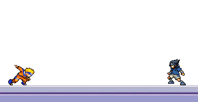

Naruto é um anime e mangá de aventura e ação criado por Masashi Kishimoto. A história se passa em um mundo fictício onde ninjas são a força militar predominante. O protagonista, Naruto Uzumaki, é um jovem ninja que deseja se tornar o Hokage, o líder da sua aldeia. Ao longo da série, Naruto enfrenta diversos inimigos poderosos, aprende novas técnicas de luta e faz amizade com seus companheiros de equipe. A série é conhecida por seus personagens carismáticos, tramas emocionantes e cenas de luta dinâmicas. Além do anime e do mangá, Naruto também gerou filmes, jogos de videogame e séries spin-off. A franquia Naruto é uma das mais populares da história dos animes e mangás.